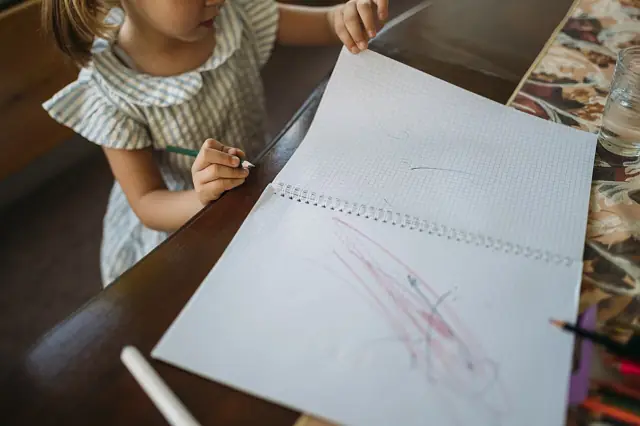
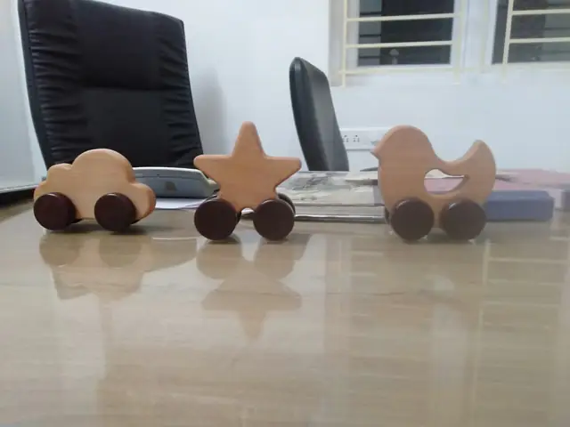
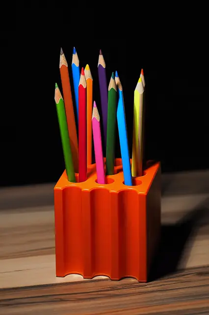

La garderie
Les informations ci-dessous sont à compléter avec l'équipe de Lino.
Accueil des écoliers
Âges accueillis, avant et après l'école, mercredi après-midi : à confirmer
Activités
Aide aux devoirs, jeux, activités manuelles : programme à confirmer
À Nabeul
Nabeul (adresse exacte à confirmer). Transport et repas : à confirmer



Horaires
| Lundi | à confirmer |
| Mardi | à confirmer |
| Mercredi | jusqu'à 18h00 |
| Jeudi | à confirmer |
| Vendredi | à confirmer |
| Samedi | à confirmer |
| Dimanche | à confirmer |
Horaire relevé sur la fiche Google le 30/09/2026. Autres jours et horaires complets à confirmer avec l'établissement.